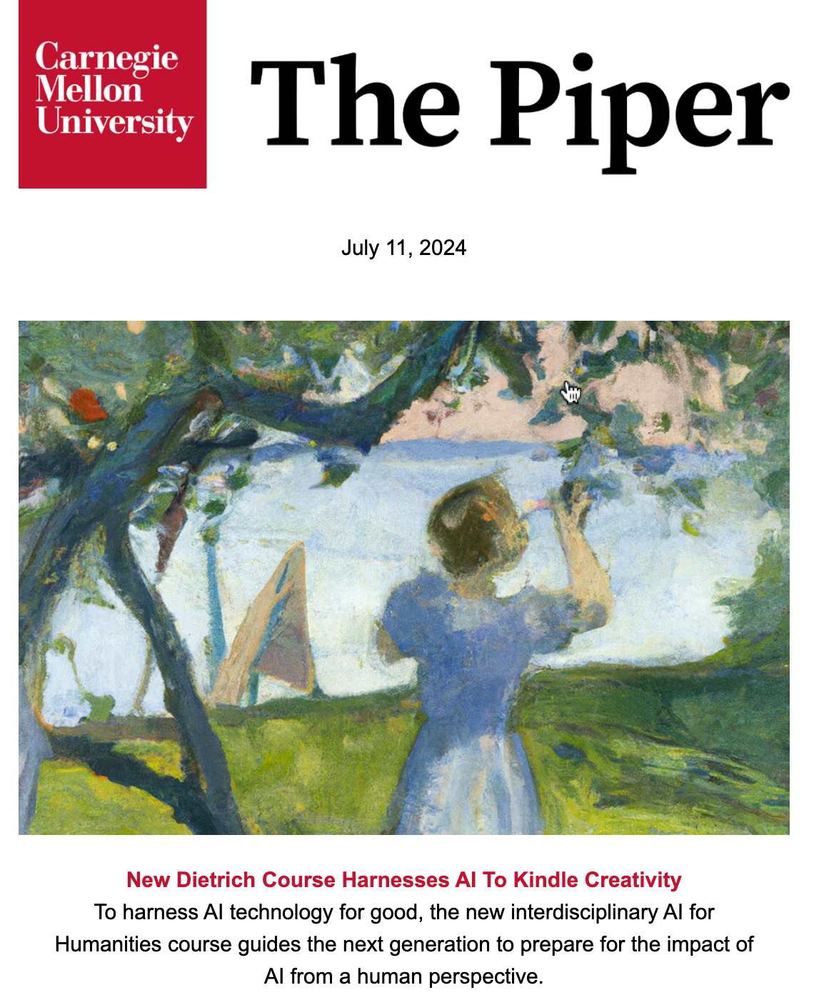
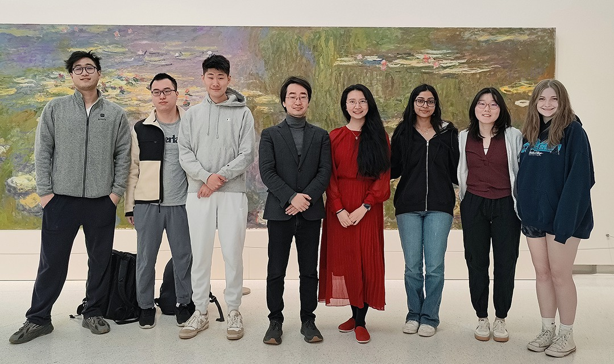

Featured Across CMU
The Piper + CMU Engineering
AI for Humanities was featured by The Piper, CMU’s internal newsletter, in the July 11, 2024 story “New Dietrich Course Harnesses AI To Kindle Creativity,” which introduces the course as preparing the next generation to understand AI’s impact from a human perspective.
The College of Engineering article “New course harnesses AI to kindle creativity” further describes how the course explores AI’s role in creative expression, cultural understanding, and human-centered technology education.
Together, the features frame the course around three linked areas: large language models and creative writing, generative models and artistic expression, and social and cultural voyages with AI.